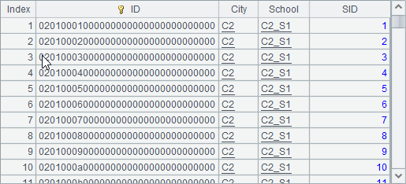
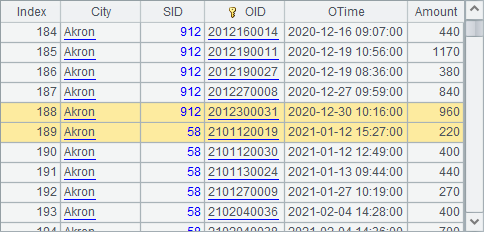
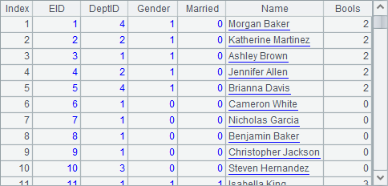
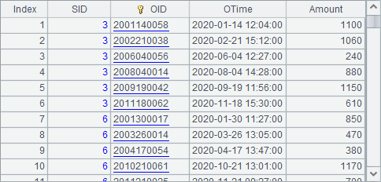
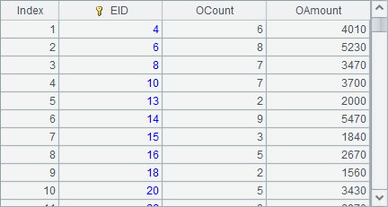

12.4.6 Polygonal regions in polar coordinates
The Polygonal region property is valid only when plotting charts in a polar coordinate system. For example, below is the plotting algorithm of a radar chart for gymnastic results:
|
|
A |
B |
|
1 |
=canvas() |
|
|
2 |
=demo.query("select * from GYMSCORE") |
|
|
3 |
=A1.plot("BackGround") |
=A1.plot("NumericAxis","name":"x","location":3, "autoCalcValueRange":false,"maxValue":16,"minValue":13, "scaleNum":3,"polarLength":0.24) |
|
4 |
=A1.plot("EnumAxis","name":"y","location":4,"gapRatio":-0.5,"labelOverlapping":true) |
=A1.plot("MapAxis","name":"colors","logicalData": A2.id(NAME),"physicalData":[-65536,-16711936,-16776961]) |
|
5 |
for A2.group(NAME) |
=A1.plot("Line","endToHead":true,"closedArea":true, "transparent":0,"lineWeight":2,"lineColor":A5.NAME: "colors","axis1":"x","data1":A5.(SCORE),"axis2":"y", "data2":A5.(EVENT)) |
|
6 |
=A1.plot("Legend","legendText": A2.id(NAME),"x":0.81,"width":0.18, "legendType":3,"legendLineWeight":2, "legendLineColor":A2.id(NAME):"colors") |
|
|
7 |
=A1.draw@p(500,300) |
|
A2 retrieves data for chart plotting. A3 plots a white background. B3 plots a numeric axis, x, as the polar axis, and A4 plots an enumeration axis, y, as the radial axis.
In particular, B4 plots a mapping axis, colors. Its properties are as follows:

Unlike the logical axis discussed in Coordinate Systems and Transformation, the mapping axis will not transform data values to the coordinates for chart plotting. Instead it is used to convert data values to corresponding property values. Here a one-to-one relationship between names of the athletes and the integer values of colors is created through the mapping axis, colors.
A5 loops through data of each of the athletes, plotting polyline charts for them in B5. Colors of the polylines are set through colors, the mapping axis.

The setting makes colors of polylines for the athletes match the mapping axis setting.
A6 plots the legend using the mapping axis, colors, too:

A7¡¯s plotting result is as follows:

Now let¡¯s study the properties of the polygonal region in the polar coordinate system. Modify A4¡¯s plotting parameters, setting color for the polygonal region of the radial axis, i.e. the enumeration axis y, checking Polygonal region, and changing Region transparency value to 0.3. The modifications are shown below:
Then the plotting result is:

Since polygons have been used in the background region of the radial axis, the polar coordinate planes present themselves as polygons. But, at this time, the polygonal region property for the polar axis hasn¡¯t been checked, so the background is still circles. Modify B3¡¯s chart parameters to set color for the polygonal region of the polar axis, i.e. the numeric axis x, checking Polygonal region and changing Region transparency value to 0.3, as shown below:

Plotting result is:

Thus the background for the polar axis has become polygonal rings. As the transparency of the polygonal regions for both the radial axis and the polar axis is set as 0.3, the finished chart has achieved an effect of color overlay.